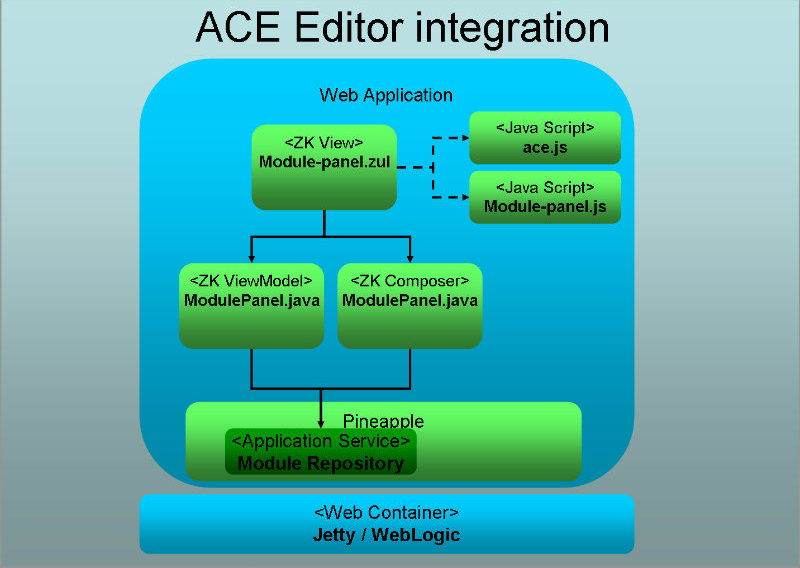
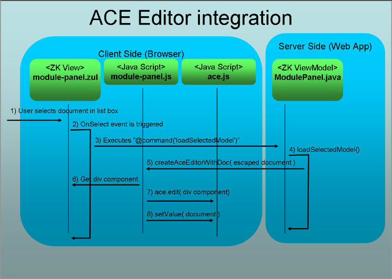
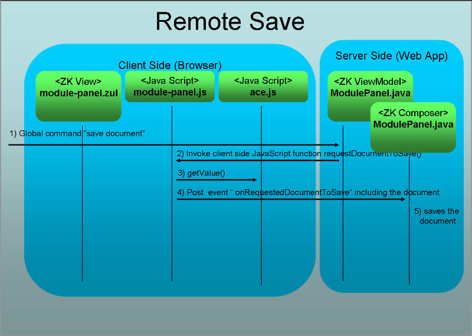

Development documentation
Schema location
The project defines a schema for future storage of web application state The schema is located in the folder: src/main/resources.
Generation of classes from XML schemas
The project uses JABX through the Maven 2 plugin maven-jaxb2-plugin to generate classes from XML schemas.
Customized package names
The generated classes are mapping into the package com.alpha.pineapple.web.model using the JAXB bindings file at: src/main/resources/bindings.xjb.
Internal configuration
WAR Deployment descriptors
web.xml
The standard Java enterprise edition deployment descriptor for web applications is located in src/main/webapp/WEB-INF/web.xml. The descriptor is defined with the version 3.0 schema, i.e. http://java.sun.com/xml/ns/javaee/web-app_3_0.xsd.
The descriptor defines:
- A context-param element with the name pineapple.home.dir which defines the location of the pineapple Home directory.
- A listener element of the class PineappleHomeInitializer which initializes the Pineapple home directory.
- A context-param element with the name log4jConfig which defines the location of the Log4j configuration file.
- A listener element of the class LoggingInitializer which initializes Log4j in the web application.
- A context-param element with the name contextConfigLocation which defines the location of the Spring web application context file.
- A listener element of the class org.springframework.web.context.ContextLoaderListener which loads the root application context of this web application at startup. Please notice: With proper usage of Spring Framework it is the intension that application services should be defined in this application context. View related beans should defined in a child application context which is loaded by the DispatcherServlet. The current configuration both types of beans in one go; application services (e.g. service-config.xml) and view related beans (e.g. webapp-config.xml) are loaded collectively by ContextLoaderListener which loads the webapp-config.xml which includes the service-config.xml. The DispatcherServlet is defined with a null parameter is thus loads a null context and inherits all the beans defined root application context.
- A listener element of the class org.springframework.web.context.request.RequestContextListener which is apparently required to resolve the error: Error creating bean with name 'scopedTarget.sessionState': Scope 'session' is not active for the current thread; consider defining a scoped proxy for this bean if you intend to refer to it from a singleton; nested exception is java.lang.IllegalStateException: No thread-bound request found: For more information:
- http://static.springsource.org/spring/docs/3.0.x/spring-framework-reference/html/beans.html#beans-factory-scopes-other
- http://forum.springsource.org/showthread.php?t=50631
- A listener element of the class org.zkoss.zk.ui.http.HttpSessionListener which initializes the ZK Session Cleaner whose purpose it is to clean up when a session is destroyed.
- A servlet element of the class DispatcherServlet which configures the Spring web MVC servlet. The servlet is configured load its application context file from /WEB-INF/spring/webapp-config.xml
- A servlet-mapping for the Spring web MVC servlet which handles all requests which matches the pattern /.
- A servlet element of the class org.zkoss.zk.ui.http.DHtmlLayoutServlet which configures the ZK loader for ZUML pages.
- A servlet element of the class org.zkoss.zk.au.http.DHtmlUpdateServlet which configures the asynchronous update engine for ZK.
- Session time out is set to 60 minutes.
- An welcome-file which is /workspace.
- An error page for HTTP 404 and 500.
weblogic.xml
WebLogic specific deployment descriptor for web applications is located in src/main/webapp/WEB-INF/weblogic.xml
The descriptor defines:
- JSP page-check-seconds is set to -1, i.e. disabled.
- servlet-reload-check-secs is set to -1, i.e. disabled.
- resource-reload-check-secs is set to -1, i.e. disabled.
- prefer-web-inf-classes is set to true. Setting this element to true subverts the class loader delegation model so that class definitions from the web application are loaded in preference to class definitions in higher-level class loaders. This allows the web application to use its own version of a third-party class, which might also be part of WebLogic Server.
zk.xml
ZK specific deployment descriptor for web applications is located in src/main/webapp/WEB-INF/zk.xml
The descriptor defines:
- max-upload-size is set to -1, i.e. disabled.
- server-push-class is set to org.zkoss.zkex.ui.comet.CometServerPush. The used server push implementation doesn't use servlet 3 asynchronous processing support. The implementation is choosen over the org.zkoss.zkmax.ui.comet.CometServerPush implementation which supports asynchronous processing but doesn't work with Jetty 9.1+ (Please visit: PINEAPPLE-705 & PINEAPPLE-708).
- session-timeout is set to 0 seconds to use the time out value defined in web.xml.
- timeout-message is configured with a time out message.
- A listener element defines a ZK life cycle event listener LifecycleEventListener which is used to capture an event when a ZK desktop is destroyed (i.e. when a browser is closed).
Pineapple configuration
Pineapple is initialized from the value of the pineappple.home.dir system property which defines the Pineapple Home directory. The directory defines the location where Pineapple will look for its configuration files, modules and write reports to.
Initialization of the home directory is done by PineappleHomeInitializer context listener as part of the initialization of the web application.
Two use cases for distribution of the web application are supported:
- Stand alone client.
- Deployable web application.
Stand alone client
When the web application is distributed as a stand alone client, then the starter scripts (e.g. runPineapple.cmd and runPineapple.sh) sets the Pineapple Home directory. In this case the initializer doesn't do any initialization.
Deployable web application
When the web application is distributed as a deployable web application, the no assumption regarding the state of the pineappple.home.dir system property should be made since it would require the user to set the system property prior to using the web application. In this case the value is read from the web.xml and used to the system property.
Logging
The web application uses Log4j for logging. The Log4j configuration file is located in src/main/webapp/WEB-INF/log4j/log4j.properties.
The Log4j configuration file is read by the com.alpha.pineapple.web.logging.LoggingInitializer class which is configured in the web.xml deployment descriptor.
The file configures logging for ALL the pineapple components / jars which constitutes the web application.
The configuration file configures Log4j to write log files to:
- ${pineapple.home.dir}/logs/pineapple-web-application.log
Spring web application context file
The main application context file for the application is located at src/main/webapp/WEB-INF/spring/webapp-config.xml.
The application context file defines:
- Configuration of Spring web MVC through the import of the file mvc-config.xml
- Configuration of services through the import of the file service-config.xml
- Component scanning of the com.alpha.pineapple.web.spring.rest package for Spring Web MVC controller classes which implements the REST API.
- Definition of messageProvder bean for I18N.
- Definition of sessionState bean for definition of the session state for a single user of the web application.
- Definition of debugInfoModel bean which defines the debug information model which provides debug information to the debug panel.
- Definition of systemInfoModel bean which defines the system information model which provides system information to the system panel which is embedded into environment configuration tab.
- Definition of treeNodeStateConverter bean which implements the org.zkoss.bind.Converter which is use to convert the state of an execution result into a string for rendering in a tree.
- Definition of treeNodeStartTimeConverter bean which implements the org.zkoss.bind.Converter which is use to convert the start time of an execution result into a string for rendering in a tree.
- Definition of treeNodeDescriptionStyleConverter bean which implements the org.zkoss.bind.Converter which is use to convert the description of an execution result into a string for rendering in a tree.
- Definition of executionStateStyleConverter bean which implements the org.zkoss.bind.Converter which converts a string based ExecutionState into a color.
- Definition of executionStateTextConverter bean which implements the org.zkoss.bind.Converter which converts a string based ExecutionState into a human readable text.
- Definition of errorMessageBoxHelper bean which is a helper class for creation of error message boxes in ZK.
- Definition of eventDispatcher bean which implements the ZK event dispatcher EventDispatcher interface which dispatches ZK events to registered ZK desktop's.
- Definition of asyncTaskExecutor bean which defines a task executor used to handle the asynchronous execution of the asyncOperationTask bean. (DEPRECATED)
- Definition of asyncTaskHelper bean which is general helper class for asynchronous execution tasks in the ZK framework. (DEPRECATED)
- Definition of unpackModuleTask bean which is asynchronous task which uploads and unpacks a zipped module and updates the GUI continuously. (DEPRECATED)
- Definition of restResultMapper bean which is implements mapping from the core component classes to the model classes which are returned by the REST web services.
Spring web MVC application context file
The application context file for Spring web MVC is located at src/main/webapp/WEB-INF/spring/mvc-config.xml.
The application context file defines:
- The mvc:annotation-driven element which configures the @Controller programming model in Spring web MVC.
- A forwarding rule which forward requests to the workspace view:
<mvc:view-controller path="/index" view-name="workspace"/> <mvc:view-controller path="/workspace" view-name="workspace"/> <mvc:view-controller path="/mvc/workspace" view-name="workspace"/> <mvc:view-controller path="/pineapple" view-name="workspace"/> <mvc:view-controller path="/error" view-name="error"/>
- A view resolver InternalResourceViewResolver which resolves view names to .zul resources within the /WEB-INF/jsp directory
- A resource mapping which maps requests for JavaScript at /js/** to the internal location /js/ at the web root in the web application.
- A resource mapping which maps requests for images at /images/** to the internal location /images/ at the web root in the web application.
- A multipart resolver to support multipart uploads in the REST API implemented using Spring web MVC.
Spring services MVC application context file
The application context file for services used by the MVC controllers is located at src/main/webapp/WEB-INF/spring/service-config.xml.
The application context file defines:
- Access to the Pineapple core component through the import of the file com.alpha.pineapple.core-config.xml.
- Access to the Pineapple HTML report generator through the import of the file com.alpha.pineapple.report.basichtml-config.xml.
- Definition of webAppCoreFactory factory bean for creation of core component instances.
- Definition of coreComponent bean which defines the core component instance created by the webAppCoreFactory factory bean.
- Definition of webAppResultListener bean for definition of a Pineapple result listener. Received events are forwarded to Reactor as events. The events are posted as result notifications.
- Definition of reportRepository bean for definition of report repository.
- Definition of reportSetMarshaller bean for definition of reports marshaller which can load and save reports in the report repository.
- Definition of activityRepository bean for definition of activity repository.
- Definition of configurationModelObjectFactory for creation for model objects returned by the REST API. The model objects are defined by the Environment configuration schema defined in the Pineapple API project.
- Definition of webAppObjectFactory for creation for model objects defined by the web application.
- Definition of webAppReactor bean which implements the Reactor.
- Definition of webAppReactorEnvironment bean which implements the Reactor environment.
- Definition of createReport bean for definition of create report Reactor consumer.
- Definition of createdReportNotifier bean for definition of create report Reactor consumer.
- Definition of openModuleActivityInvoker bean for definition of open module Reactor consumer.
- Definition of executeOperationActivityInvoker bean for definition of execute operation Reactor consumer.
- Definition of resultNotificationNotifier bean for definition of execution result notifier Reactor consumer.
ZK GUI definition files (.zul)
The GUI widgets are defined by .zul files located in the src/main/webapp/WEB-INF/jsp directory.
For each .zul file either a view model (MVVM)class and/or a ZK controller class exists which implements the logic (e.g. event code) of the widgets. The ZK view model classes are located in the package com.alpha.pineapple.web.zk.viewmodel. The ZK controller classes are located in the package com.alpha.pineapple.web.zk.controller.
Servlet API configuration
The web application is configured with a Maven dependency to the Servlet API version 3.1.0 (see PINEAPPLE-715/6) with the provided scope:
<dependency>
<groupId>javax.servlet</groupId>
<artifactId>javax.servlet-api</artifactId>
<scope>provided</scope>
</dependency>
The version is managed from the main project pom.xml.
JSP Standard Tag Library (JSTL)
The application doesn't use JSTL and contains no dependencies to JSTL (since resolution of PINEAPPLE-145).
Internationalization (I18N) configuration file
The report generator uses internationalization. Messages used by classes in the project are located in the file src/main/resources/com.alpha.pineapple.web-messages.properties.
Integration of the ACE editor
The module panel implements integration of the ACE editor to support remote editing of model files.
Components used to implement the ACE integration
This diagram illustrates the components constitutes the integration between ZK and ACE:
The participating files are:
- ZK View - which defines the GUI widgets. The view is implemented in the .zul file named module-panel.zul.
- ZK View Model - which provides data for the ZK view using the ZK MVVM and implements event handlers. The view model is implemented as a Java POJO named ModulePanel.java.
- JavaScript #1 - which implement functions for creation of the editor instance. The script is implemented in the file named module-panel.js.
- JavaScript #2 - which implements the ACE editor. The editor is implemented in a collection of scripts which are added to the web application. The main script is named ace.js.
- Application Service - which serves as a backend for the view model. The service is implemented as a Java POJO named SessionState.java.
Loading a document in ACE
This diagram illustrates the call sequence when a new document is loaded:
Saving a document in ACE
This diagram illustrates the call sequence when a document is saved at the server side:
Close a document in ACE
The sequence for closing a document (a module model) corresponds to the sequence for openning a document:
- User selects "Close Module" (e.g. on the menu).
- The menu bar emits the global command CloseModule.
- The module panel MVVM receives the command and clears the selected module and model in the module panel and in the session state.
- The module panel MVVM invokes the closeAceEditor JavaScript.
- The closeAceEditor JavaScript "closes" the editor by creating a new empty document and hides it.
- The workspace panel MVVM receives the command and clears the selected module and model in the workspace header.
The REST API
Implementation using Spring Web MVC
The REST API is configured and implemented using Spring Web MVC.
The API is implemented in the package com.alpha.pineapple.web.spring.rest. The classes are annotated as Spring @Controller classes and picked up by component scan of the package during application context initialization. Furthermore, configuration-wise a multipart resolver has been configured to support multipart file upload by the web services.
The REST web services are implemented using the Spring annotations for request mapping etc. The web services are implemented to return the result using the @ResponseBody annotation letting Spring handle the marshalling of the returned model objects by the services.
Implementation
Reactor usage
Reactor configuration
Currently the default environment is used.
The default environment is configured to use a ThreadPoolExecutorDispatcher which uses a ThreadPoolExecutor with an unbounded queue to dispatch events. Reactor in its default configuration implements asynchronous event processing.
Registration of Reactor consumers
Registration of Reactor consumers is implemented by the WebAppCoreFactory:
public PineappleCore createCore() throws CoreException {
webAppReactor.getConsumerRegistry().clear();
webAppReactor.on($(REACTOR_TOPIC_SERVICE_NOTIFICATION), createReport);
webAppReactor.on($(REACTOR_TOPIC_SERVICE_NOTIFICATION), resultNotificationNotifier);
webAppReactor.on($(REACTOR_TOPIC_SERVICE_CREATED_REPORT), createdReportNotification);
webAppReactor.on(T(OpenModuleActivity.class), openModuleActivityInvoker);
webAppReactor.on(T(ExecuteOperationActivity.class), executeOperationActivityInvoker);
// create core
ResultListener[] listeners = { webAppResultListener };
PineappleCore coreComponent = coreFactory.createCore(listeners);
return coreComponent;
}
Reactor topics and events
These topics are used:
- /webapp/service/execution-result-notification
- /webapp/service/created-report
- OpenModuleActivity.class
- ExecuteOperationActivity.class
The topic /webapp/service/execution-result-notification is used to stream converted Pineapple events as Reactor events. The events posted on this topic are wrapped ExecutionResultNotification instances. The events are produced by the result listener WebAppResultListenerImpl.
The topic /webapp/service/created-report is used to signal that a report has been generated. The events posted on this topic are wrapped String instances. The events are produced by the Reactor consumer / report generator CreateReportImpl.
The topic OpenModuleActivity.class is used to signal that a open module activity should be performed again. The events posted on this topic are wrapped OpenModuleActivity instances. The events are produced by the ZK view model HomePanel for the home tab.
The topic ExecuteOperationActivty.class is used to signal that a execute operation activity should be performed again. The events posted on this topic are wrapped ExecuteOperationActivity instances. The events are produced by the ZK view model HomePanel for the home tab.
Reactor consumers
These consumers are registered:
- Reactor-to-ZK event transformer which notifies the GUI that an execution result has been produced by Pineapple core component. If the result is part of any user initiated execution then the execution panel view model should be updated. The transformer is implemented by the class ResultNotificationNotifierImpl. The consumer subscribes to events from the /webapp/service/execution-result-notification topic.
- Report generator. The generator is implemented by the class CreateReportImpl The consumer subscribes to events from the /webapp/service/execution-result-notification topic.
- Reactor-to-ZK event transformer which notifies the GUI that a report is generated and the report view should be updated. The transformer is implemented by the class CreatedReportNotifierImpl. The consumer subscribes to events from the /webapp/service/created-report topic.
- Reactor-to-ZK event transformer which notifies the GUI that an open module activity should be performed again by loading the module and updating the GUI. The transformer is implemented by the class OpenModuleActivityInvokerImpl. The consumer subscribes to events from the OpenModuleActivity.class topic.
- Reactor-to-ZK event transformer which notifies the GUI that an execute operation activity should be performed again by executing an operation on the module and updating the GUI. The transformer is implemented by the class ExecuteOperationActivityInvokerImpl. The consumer subscribes to events from the ExecuteOperationActivity.class topic.
Dispatching Reactor events as ZK events
Dispatch of Reactor events as ZK events is implemented to support notification of the GUI of events in the non GUI layer of the web application which should be reflected in the GUI.
A ZK event dispatcher is used by a Reactor consumer who wants to post to a ZK event. A Reactor consumer is by nature non-graphical and has no reference to the GUI. The ZK event dispatcher is a class* which perform a double registration when a ZK desktop is created. The event dispatcher registers itself with the desktop to allow for unregistration when the desktop is destroyed. Furthermore the dispatcher registers the ZK desktop to keep record of all known desktop’s (i.e. live GUI’s). The purpose is to have a defined end point where ZK events can be posted to.
The event dispatcher will dispatch events to all registered desktops. A registered desktop is unregistered when the desktop is destroyed.
The interface EventDispatcher is used to implement an event dispatcher The default implementation of the interface is EventDispatcherImpl.
Implementing Reactor consumer who dispatch ZK events
To enable a Reactor consumer to dispatch a ZK events it must implement two interfaces:
- The ZK interface EventListener
- The Reactor interface Consumer
The Reactor interface receives a Reactor event in the accept method.
The received Reactor event is transformed into a ZK event which is dispatched to this class as ZK a event listener. The purpose is to shift from the Reactor thread into ZK controlled threads. The received ZK event is posted as global command with the either the ZK application or session scope. The purpose is to notify the target view model (e.g. the reort panel or the execution panel) that something relevant happened and the view should be updated.
Order of initialization of the context listeners
The order of initialization is:
- PineappleHomeInitializer
- Log4jInitializer
- ContextLoaderListener
The PineappleHomeInitializer is initialized first since it sets the pineappple.home.dir system property which is used by log configuration initialized by Log4jInitializer and the Pineapple core component defined in the Spring application context initialized by ContextLoaderListener.
Core Factory Classes
The package com.alpha.pineapple.web contains a factory for creation of the core component:
- WebAppCoreFactory which registers Reactor consumers, and creates a core component instance with the a Pineapple-to-Reactor event listener WebAppResultListenerImpl configured.
Context Listeners
The package com.alpha.pineapple.web.context contains servlet context listeners which is used to initialize the web application:
- LoggingInitializer which initializes Log4j when the application is started.
- PineappleHomeInitializer which initializes the Pineapple Home directory.
PineappleHomeInitializer
The purpose of the initializer is to support the two use cases for distribution of the web application mentioned above.
The directory is initialized using the algorithm:
- If the system property pineappple.home.dir is already defined then exit.
- Read the parameter pineappple.home.dir from the web.xml.
- if the read value is null, then use the default value ${user.home}/.pineapple.
- Substitute any variables defined with ${xxxxx} with system properties in the value from step 3).
- Set the system property pineappple.home.dir with the value from step 4)
Model classes
The package com.alpha.pineapple.web.model contains:
- RestResultMapper defines interface for model mapper which can map object used by core component to model objects returned by the REST API.
- RestResultMapperImpl implementation of the RestResultMapper interface.
- DebugInfoModel Creates model of a available debug information. Is used to provide content to the DebugPanel.
- SystemInfoModel Creates model of a available system information. Is used to provide content to the systemInfoPanel.
- ReportRepository defines interface for a report repository
- ReportRepositoryImpl Implementation of the ReportRepository interface. The repository contains information about reports stored on disk. The location of the reports is resolved form the RuntimeDirectoryProvider.
- SessionState defines interface for the web application session state for a single user.
- SessionStateImpl is an implementation of the SessionState interface.
- UnpackedEntry is a data object which is used to describe a unpacked ZIP file entry during the execution of the asynchronous task unpackModuleTask.
- Model defines interface for a simple data object which is used to render a model in the module panel. The model object is introduced to avoid the issue PINEAPPLE-269: Loading a new module results in a class cast exception from the execution panel.
- ModelImpl is an implementation of the Model interface.
- ExecutionResultProperty class for rendering detail about a selected execution result in the execution panel.
Accounts classes
The package com.alpha.pineapple.web.account contains interfaces and classes for user account management:
- Account defines interface for user accounts.
- AccountImpl implements Account interface.
Reactor event support
The package com.alpha.pineapple.web.event contains interfaces and classes to support usage of Spring Reactor and mapping to ZK events:
- EventDispatcher defines the interface event dispatcher which supports dispatch of ZK events from Reactor consumers (i.e. non-GUI code).
- EventDispatcherImpl implements the EventDispatcher interface.
- WebAppResultListenerImpl implements the Pineapple EventListener interface which forwards Pineapple events of the type ExecutionResultNotification as Reactor events.
EventDispatcherImpl
The event dispatcher serves to maintain a set of live ZK desktop's which can be used by the the non GUI parts of the web application (e.g. Reactor consumers) as defined endpoints for posting notifications to the GUI.
The event dispatcher is used by ZK desktop's to register themselves (using the register(Desktop d) method) upon creation as a live GUI which allows the dispatcher to forward ZK events to it. The unregister(Desktop d) method is used upon destruction by the desktop to unregister itself and thus no longer serve as an end point for posting ZK events.
Finally the dispatchZkEvent(Event zkEvent, EventListener<Event> eventListener) method is used by Reactor consumers and other non GUI parts of the application to post ZK events to the GUI.
WebAppResultListenerImpl
The class implements the Pineapple EventListener interface. The class is registered as a result listener with the Pineapple core component. The class is registered by the WebAppCoreFactory as part of the core component initialization. The class wraps received ExecutionResultNotification events as Reactor events, an event is posted as ExecutionResultNotification in Reactor. The Reactor events are sent to the web application Reactor instance.
Reactor consumers
The package com.alpha.pineapple.web.event.consumer contains classes which implements the Reactor Consumer interface:
- ResultNotificationNotifierImpl implements a Reactor-to-ZK event transformer which notifies the GUI that an execution result has been produced by Pineapple core component. If the result is part of any user initiated execution then the execution panel view model should be updated.
- CreateReportImpl implements a report generator.
- CreatedReportNotifierImpl implements a Reactor-to-ZK event transformer which notifies the GUI that a report is generated and the report view should be updated.
- OpenModuleActivityInvokerImpl implements a Reactor-to-ZK event transformer which notifies the GUI that an open module activity should should performed again and that the GUI should be updated.
- ExecuteOperationActivityInvokerImpl implements a Reactor-to-ZK event transformer which notifies the GUI that an execute operation activity should should performed again and that the GUI should be updated.
ResultNotificationNotifierImpl
The purpose of this class is to notify the GUI that an execution result has been produced by Pineapple core component. If the result is part of any user initiated execution then the execution panel view model should be updated.
The class Implements the ZK EventListener and the Reactor Consumer interfaces. The consumer subscribes to events from the /webapp/service/execution-result-notification topic. When a Reactor event is received then the EventDispatcher is invoked with the class as ZK a event listener.
The event dispatcher schedules the event listener as an asynchronous event if any ZK desktop exists. The purpose is to shift from the Reactor thread into ZK controlled threads.
When the event listener method is invoked with a ZK event then a global command is posted with the session scope to notify the execution panel view model that execution result is produced and that the view should be updated if the result is part of any user initiated execution.
CreateReportImpl
The consumer subscribes to events from the /webapp/service/execution-result-notification topic.
If a received ExecutionResultNotification signals the conclusion of an operation then a report is generated using the HTML report generator which is feed the received ExecutionResultNotification as input.
When the report is generated then a created-report event is posted on the /webapp/service/created-report topic.
CreatedReportNotifierImpl
The purpose of this class is to notify the GUI that a new report has been generated and that all active GUI’s (for all users) should be updated to reflect the change.
The class Implements the ZK EventListener and the Reactor Consumer interfaces. The consumer subscribes to events from the /webapp/service/created-report topic. When a Reactor event is received then the EventDispatcher is invoked with the class as ZK a event listener.
The event dispatcher schedules the event listener as an asynchronous event if any ZK desktop exists. The purpose is to shift from the Reactor thread into ZK controlled threads.
When the event listener method is invoked with a ZK event then a global command is posted with the application scope to notify the report panel view model that report creation is completed and that the view should be updated.
OpenModuleActivityInvokerImpl
The purpose of this class is to notify the GUI that an user activity should be performed again and that the GUI for the current user should be updated to reflect the change.
The class Implements the ZK EventListener and the Reactor Consumer interfaces. The consumer subscribes to events from the OpenModuleActivity.class topic. When a Reactor event is received then the EventDispatcher is invoked with the class as ZK a event listener.
The event dispatcher schedules the event listener as an asynchronous event if any ZK desktop exists. The purpose is to shift from the Reactor thread into ZK controlled threads.
When the event listener method is invoked with a ZK event then a global command is posted with the session scope to notify the module panel view model that it should load the selected module and that the view should be updated.
ExecuteOperationActivityInvokerImpl
The purpose of this class is to notify the GUI that an user activity should be performed again and that the GUI for the current user should be updated to reflect the change.
The class Implements the ZK EventListener and the Reactor Consumer interfaces. The consumer subscribes to events from the ExecuteOperationActivity.class topic. When a Reactor event is received then the EventDispatcher is invoked with the class as ZK a event listener.
The event dispatcher schedules the event listener as an asynchronous event if any ZK desktop exists. The purpose is to shift from the Reactor thread into ZK controlled threads.
When the event listener method is invoked with a ZK event then a global command is posted with the session scope to notify the execute panel view model that it should execute the targeted module and environment with an operation and that the view should be updated.
ZK View Models
The package com.alpha.pineapple.web.zk.viewmodel contains ZK view model classes which backs views implemented in .zul files:
- DebugPanel - provides data for the Debug view.
- FooterPanel - provides data for the Footer view.
- ExecutionPanel - provides data for the Execution view.
- ScheduledOperationPanel - provides data for the Scheduled operation view.
- ActivityPanelPopup - provides data for the Activity popup view.
- ModulePanel - provides data for the Module view.
- OpenModuleModalPanel - provides data for the Open module modal view.
- DeleteModuleModalPanel - provides data for the Delete module modal view.
- ReportPanel - provides data for the Report view.
- UploadModuleModalPanel - provides data for the Upload module modal view.
- WorkspacePanel - provides data for the main Workspace view.
- EnvironmentConfigurationPanel - provides data for the main Configuration view.
- ResetCredentialPasswordModelPanel - provides data for the reset credential password modal view.
- CreateResourcePropertyModalPanel - provides data for the create resource property modal view.
- CreateModelModalPanel - provides data for the create model modal view.
ReportPanel
The .zul file for the report panel, i.e. report-panel.zul is configured with a ZK Binder with application scope:
<window apply="org.zkoss.bind.BindComposer"
binder="@init(queueName='pineapple-queue',queueScope='application')"
viewModel="@id('vm') @init('com.alpha.pineapple.web.zk.viewmodel.ReportPanel')"
hflex="1" vflex="1" border="none" >
The application scope is use to update all desktops when a report is created and the "completedReportCreation" global command is posted.
ActivityPanelPopup
The .zul file for the activity panel, i.e. activities-panel-popup is configured with a ZK Binder with application scope:
<window apply="org.zkoss.bind.BindComposer"
binder="@init(queueName='pineapple-queue',queueScope='application')"
viewModel="@id('vm') @init('com.alpha.pineapple.web.zk.viewmodel.ActivityPanelPopup')"
hflex="1" vflex="1" border="none" >
The application scope is use to update all desktops when an activity is created and the "completedActivityCreation" global command is posted.
ZK View Controllers
The package com.alpha.pineapple.web.zk.controller contains ZK composer classes for views which requires additional functionality that can be provided by a view model. If a view requires data then a view model is implemented. As result the composer shouldn't store any data in them:
- ExecutionPanel - implements controller functionality for the Execution view.
- Menu - implements controller functionality for the Menu bar..
- ModulePanel - implements controller functionality for the Model view.
- UploadModuleModalPanel - implements controller functionality for the Upload module modal view. The controller handles the upload of a zipped module into the module repository. The actual upload is implemented by ZK. The unpacking of the uploaded zipped module is handled by the asynchronous task UnpackModuleTask which unpacks the module archive into the module repository while updating the ZK view by sending UnpackedEntryEvent and UnpackModuleTaskEvent events.
- WorkspacePanel - implements controller functionality for the main Workspace view.
Asynchronous Tasks
The package com.alpha.pineapple.web.zk.asynctask contains asynchronous tasks which supports execution of long running processes while updating the ZK GUI by scheduling ZK events.
- AsyncTask - interface for asynchronous tasks. DEPRECATED.
- AsyncTaskHelper - Helper class for execution of asynchronous tasks and scheduling of ZK GUI events. DEPRECATED.
- UnpackModuleTask - Implementation of the AsyncTask interface which implement upload of a zipped and module unpacking it into the module repository.
ZK Events
The package com.alpha.pineapple.web.zk.asynctask.event contains ZK event classes which is used by asynchronous tasks to communicate updates to the ZK controllers.
- UnpackedEntryEvent - ZK event used by the UnpackModuleTask task to communicate that it have unpacked an entry (file or directory).
- UnpackModuleTaskEvent - ZK event used by the UnpackModuleTask task to communicate its progress in unpacking a file.
- ResultNotificationEvent - ZK event used by the ResultNotificationNotifierImpl consumer to dispatch a result notification event to an event handler.
- GenericEvent - ZK event used by the EventDispatcherImpl task to dispatch a generic event with no arguments to an event handler.
Asynchronous task visitors
The package com.alpha.pineapple.web.zk.asynctask.event.visitor contains interfaces for visitors which can receive events from asynchronous tasks:
- UnpackModuleTaskEventVisitor - interface for visitor which can receive task for the UnpackModuleTask task.
ZK lifecycle event listeners
The package com.alpha.pineapple.web.zk.lifecycle contains classes which implements the ZK lifecycle event listener interfaces:
- LifecycleEventListener - implements the ZK DesktopCleanup interface whose method is invoked when a ZK desktop is destroyed.
LifecycleEventListener
The class is registered as ZK event listener in zk.xml. The class implements a single method cleanup(Desktop desktop) which is invoked when a ZK desktop is destroyed. The listener performs the actions:
- Invalidates the ZK session.
- Unregisters the ZK desktop from the event dispatcher.
- Removes the event dispatcher as an attribute from the desktop.
ZK converters
The package com.alpha.pineapple.web.zk.converter contains ZK converters which can convert data object into formats which can be rendered by views.
REST web service controllers
The package com.alpha.pineapple.web.spring.rest implements the REST web services:
- ConfigurationController - implements web services for configuration of Pineapple, e.g. CRUD on environment configuration entities.
- ExecuteController - implements web services for execution of operations in Pineapple.
- ModuleController - implements web services for management of modules in Pineapple.
- SystemController - implements web services for system information about Pineapple.
Using the Jetty-maven-plugin for development and testing
The project is set up to use the Jetty-Maven-plugin for rapid development and testing. To run the application in Jetty invoke, the Maven command:
mvn jetty:run
The plugin will start the Jetty server with the application deployed with these parameters:
- host = localhost
- port = 8080
The application URL is: http://localhost:8080
For more info about the Jetty Maven Plugin, visit: http://wiki.eclipse.org/Jetty/Feature/Jetty_Maven_Plugin
Pineapple Home directory configuration
The Pineapple Home directory will be set to the value of the pineapple.home.dir parameter in the web.xml whose default value is ${user.home}/.pineapple.
Logging configuration for Jetty
The plugin is configured to use Log4j for logging. The Log4j configuration file is located in src/test/resources/log4j.properties.
The Log4j configuration file is read by the Commons Logging bridge in Jetty which is configured by the plugin to use Log4j as logging implementation.
The file configures logging for ALL the pineapple components / jars which constitutes the web application, including log output from Jetty.
The configuration file configures Log4j to write log files to:
- ${pineapple.home.dir}/logs/pineapple-web-application-jettymavenplugin.log
The plugin is configured to set the System properties:
slf4j = false log4j.configuration= file:./target/classes/log4j.properties
..which disables logging to slf4j and configures where the plugin will look for a Log4j configuration. Furthermore, the plugin requires the dependencies to commons-logging, slf4j-jcl and log4j for the Log4j based logging to work.